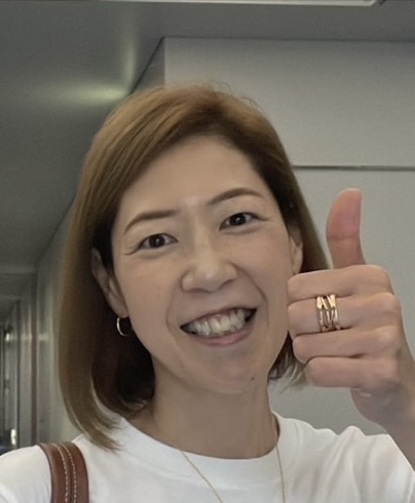
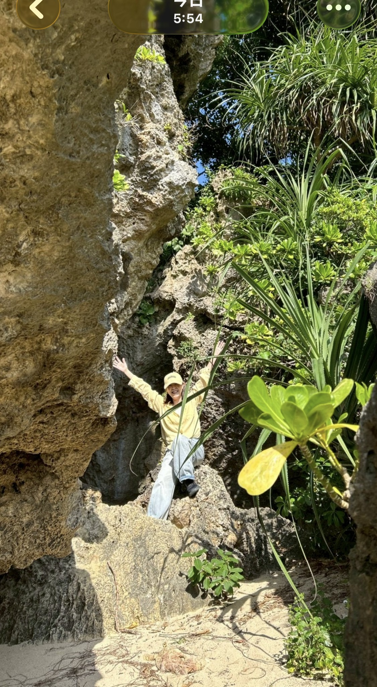
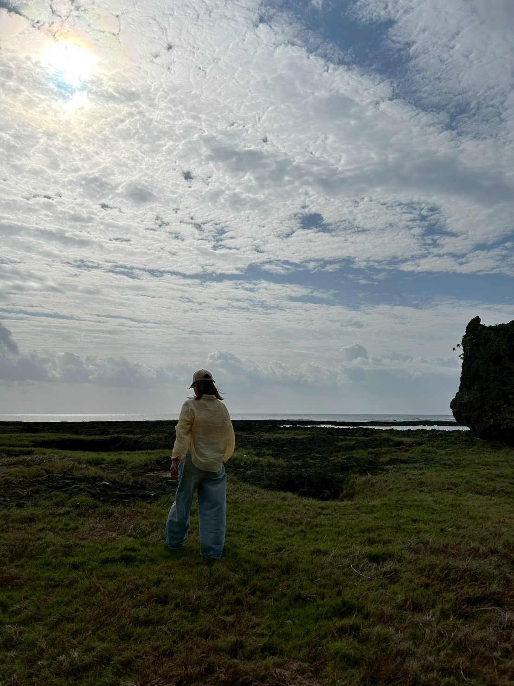
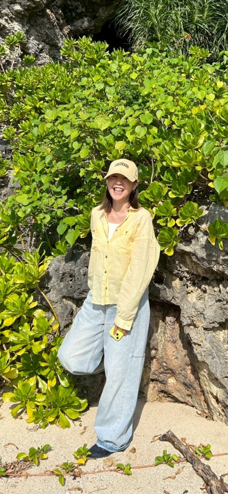

うまく話せなくていい。まとまらなくていい。
あなたのポテンシャルは、すでにそこにある。
ただ、どこかで詰まっているだけ。
90分後、少しだけ体が軽くなっていたら、
それで十分です。
Zoom 90分 ／ 完全無料

WORRY
やる気はある。エネルギーもある。でも「何をやりたいのか」がわからなくて、動けないまま時間だけが過ぎていく。
頭では「やらなきゃ」とわかっている。でも気づいたらまた後回しにしている。その繰り返しに、少し疲れてきた。
「好きなことは？」と言われると困る。仕事以外に夢中になれるものが見つからない。それが何となく寂しい。
役割や肩書きを外したとき、「自分」って何だろうと思う。誰かの期待に応えてきた分、自分の輪郭がぼやけてきた。
会社員のまま何かを始めたい気持ちはある。でも「何をすればいいか」「自分にできるのか」がわからなくて、ずっと考えたまま時間だけが過ぎていく。
毎日こなしているだけ。気づいたら何年も経っていた。もっと軽やかに、自分らしく生きたいのに、方法がわからない。
PROMISE
「どこまで話していいんだろう」
「否定されないかな」
そんな不安を持ったまま来てください。
何を聞いても「そうなのね」「こういうこと？」
と理解しようとする姿勢で、ただ受け取ります。
あなたを変えようとするのではありません。
あなたの中にある流れを、一緒に取り戻すのです。
深掘りも追及もしません。
大切にするのは、「安心」と「解放」。
あなたのポテンシャルは、すでにそこにある。
ただ詰まっているだけ。その詰まりを一緒に見つけて、
あなたらしい流れを取り戻す90分です。
SESSION FLOW
STEP 01 ／ 安心の場を作る
「今日は答えを出さなくていいです」「うまく話せなくても大丈夫です」。そんな言葉から始めます。あなたのペースで、ゆっくりでいい。
STEP 02 ／ ただ、聴く
「最近どんなことが気になっていますか？」広い問いから始めて、何を言っても「そうなのね」「こういうこと？」と確認するだけ。ただ受け取る時間です。
STEP 03 ／ 本音が流れ出す
安心できると、自然と本音が出てきます。「本当はどうしたいんですか？」と一度だけ問います。答えが出なくてもいい。その「わからない」も、大切な言葉です。
STEP 04 ／ 体感が変わる
「今この瞬間、何か変わった感覚はありますか？」。その変化をあなた自身の言葉で言語化します。その体感があれば、「できる」に変わる。「明日ひとつだけやるとしたら？」と小さな一歩を一緒に見つけます。
STEP 05 ／ 余韻を持ち帰る
「今日話してみてどうでしたか？」。その感想を聞いて終わります。次のステップは押しつけません。続けたいと思ったら、いつでも。
RESULT
「これで何か変わるの？」そんな疑問を持っていていい。よくある変化をご紹介します。
話すだけで、ずっと抱えていたものが整理される感覚があります。「こんなに抱えてたんだ」と気づく方も。
ぼんやりとはあるのに言葉にできなかったことが、話す中で「あ、そういうことか」と自分で言語化できる。
大きな変化じゃなくていい。小さな一歩が見つかって、自然に動ける。「なにがどうなん？」から「じゃ、やってみよ！」へ。
「やらなきゃ」と思いながら止まっていたことが、なぜかスッと動き始める。あの詰まりが、どこかへ流れていった感覚。
外側の年齢や役割ではなく、内側の自分とつながる感覚。「これが私だ」と思える、根拠のない安心感が生まれる。
誰かの期待に応えるのではなく、内側からエネルギーが湧き出す感覚。「あなたはあなたのままでいい」と、自分に言えるようになる。
VOICE
話しているうちに、思ってもいない言葉が自分の口から出てきて、びっくりしました。
ずっと気づかなかった自分の思い込みや思考の癖に、初めて気づけた気がします。
ただ話しているだけなのに、頭の中がどんどん整理されていって、セッションが終わった瞬間に「あ、やってみよう」と思えました。
次の日には、ずっと後回しにしていたことを動き出していました。
本質をズバッと言ってもらって、「自分ってこんな良い面のある人間だったんだ」と初めて腑に落ちました。
周りからずっと褒めてもらっていた言葉が、ようやく自分の中にすっと入ってきた感覚でした。
そして、「私が大事にしていることって、こういうことだったんだ！」と、自分の軸にも気づけました。
「部下に嫌われてもいい」と思っていたのに、話していたら、本当は嫌われるのが怖くて、言いたくても言えなかったんだと気づいてしまいました。
強がっていた自分の裏側に、ずっと隠していた本音があったことに、初めて気づけました。



ABOUT
Sakaemiki
製造・営業・経営企画・総務・人事など、現場と経営をつなぐ仕事に長く関わってきました。
その中で気づいたことがあります。「流れが詰まっている人は、能力がないのではない。ただ、どこかで詰まっているだけだ」と。
やりたいことはある。動きたい気持ちもある。でも何かが引っかかって、前に進めない。
そのポテンシャルはすでにあなたの中にある。その詰まりを一緒に見つけて、あなたらしい流れを取り戻すこと。それが私のコーチングです。
DETAIL
| 料金 | 無料 |
|---|---|
| 時間 | 90分（Zoom） |
| 対象 |
自分らしく生きたいけど何かが詰まっている方 やりたいことはあるのに動けない方 自分のポテンシャルを活かしきれていない気がする方 もっと軽やかに、自分らしく生きていきたい方 |
| 申込方法 | 下記フォームよりお申し込みください |
まだわからなくていい。うまく話せなくていい。
あなたらしい流れは、すでにあなたの中にある。
完全無料 ／ Zoom 90分